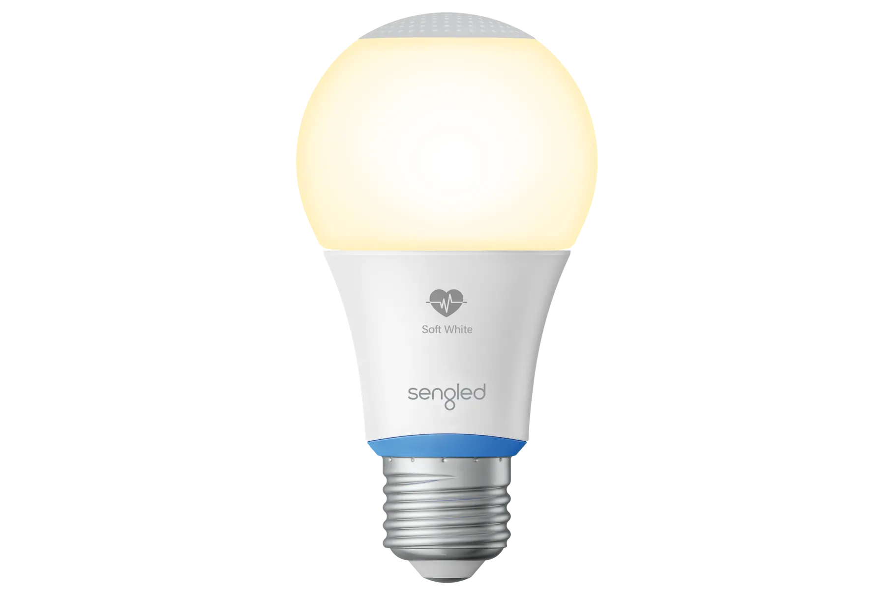

หลอดไฟตรวจสอบ คืออะไร
โดยตัวหลอดไฟ Sengled Smart Health Monitoring Light เป็นหลอดไฟแบบคู่ ที่มีการติดตั้ง Wi-Fi / Bluetooth พร้อมระบบเพื่อช่วยการตรวจสุขภาพในตัวโดยใช้เทคโนโลยีเรดาร์ (radar technology) ออกแบบมาเพื่อติดตามการนอนหลับและการตรวจวัดทางไบโอเมตริก (biometric measurements) เช่น อัตราการเต้นของหัวใจ และอุณหภูมิของร่างกาย ตลอดจนสัญญาณชีพอื่น ๆ
